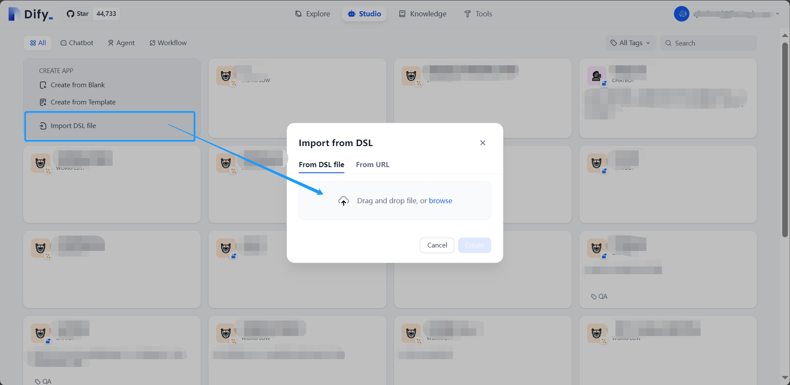
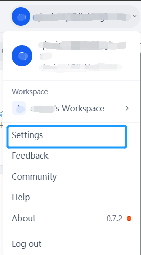
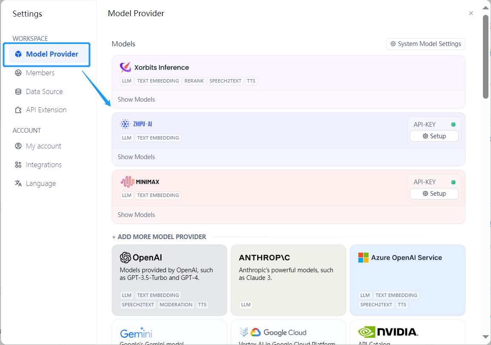
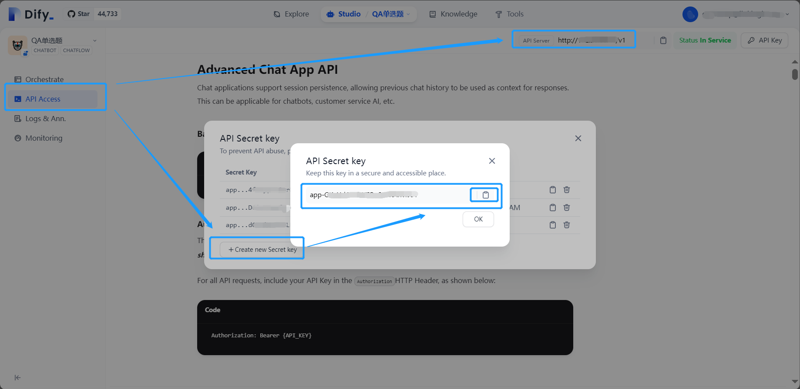

简体中文|English
This project aims to automate the generation of Q&A datasets, which can be applied to evaluate the knowledge capability of large models in a specific domain. For related articles, refer to 《Establishing the Supply Chain Finance Large Model Evaluation System》
This project currently provides three types of question formats: multiple-choice questions (MCQs), true/false questions, and open-ended questions. The project leverages the Dify workflow to automate question generation and uses API calls to read, generate, and format the output of question materials. The generated Q&A dataset related to supply chain finance is used to assess model knowledge capability through the Opencompass platform.
.
├── dataset # Generated datasets
│ ├── mcq.jsonl
│ ├── qa.jsonl
│ └── TorF.jsonl
├── docs # docs about this project
│ └── 数据集评测背景及过程.pdf
├── dify_file # Dify workflow file
│ ├── check_mcq.yml
│ ├── check_TF.yml
│ ├── generate_mcq.yml
│ ├── generate_qa.yml
│ └── generate_TF.yml
├── QAgenerate # Python project
│ ├── checkQA_mcq.py # py files for check
│ ├── checkQA_TF.py
│ ├── txt2QA_qa.py # py files for QA generation via txt
│ ├── txt2QA_mcq.py
│ ├── txt2QA_TF.py
│ ├── url2QA_TF.py # py files for QA generation via url
│ ├── url2QA_mcq.py
│ ├── url2QA_qa.py
│ ├── cutPdf.py # other files（for pdf cutting,file format transfer）
│ ├── data2jsonl.py
│ ├── txt_list # folder for txt
│ └── dataset # folder for generated folders
├── README.md
├── README_EN.md
To start Dify service you can choose to deploy Dify locally or use Dify Cloud. If you choose the way of running the docker-compose.yml file to start the service, please make sure that Docker and Docker Compose are installed on your machine. For more details refer to Dify
This project requires Python environment for reading of material, API calls for dify workflows and formatted output of QA datasets.
All the dify workflow in our project have been already explored out as DSL file, and they are in the folder named dify_file. Before start this project you are supposed to import all the dify workflow you need into your dify studio.



When setting the model provider, you can get API key by following tips on the page and then use the model. The default model in our dify wolkflow are minimax-6.5s and qwen1.5. And you can change any model provided in dify as you need. If necessary, just don't forget to change the model settings in LLM block of your workflow.

Click “API Access” in the left navigation bar in the workflow editor page, and then click the "API key" in the upper-right corner to creat an API key, and don't forget to record the "API server address" in the upper-right corner while recording the API key you created.
Fill in the blanks in the function that calls dify workflow in python files with the corresponding URL and API key.
def get_llm_response(input_text):
url = 'your_dify_url' #add your dify url
data = {
"inputs": {},
"query": input_text,
"response_mode": "blocking",
"conversation_id": "",
"user": "abc-123",
}
json_data = json.dumps(data)
response = requests.post(url,
data=json_data,
headers={
"Content-Type": "application/json",
'Authorization': f'Bearer your_dify_workflow_apikey' #add your workflow apikey
}
)
response_text = response.text
return json.loads(response_text)['answer']
Note the correspondence between the Dify workflow and the python file
The Dify workflow for QA generation is distinguished only by the type of question, and each workflow for QA generation can generate the corresponding type of question whether input text or URL, but different materials for generation are input in different ways, thus corresponding to different python scripts respectively.
| Dify file | Python file | Introduction |
|---|---|---|
| generate_mcq.yml | txt2QA_mcq.py | Generate mcq via txt |
| url2QA_mcq.py | Generate mcq via url | |
| generate_TF.yml | txt2QA_TF.py | Generate TorF Question via txt |
| url2QA_TF.py | Generate TorF Question via url | |
| generate_qa.yml | txt2QA_qa.py | Generate qa via txt |
| url2QA_qa.py | Generate qa via url |
Materials for QA generation supports both text ans url：
.txt files with appropriate content length and placed in a folder.Due to current workflow input limitations and settings, it is recommended that each txt file be limited to between 1000 and 5000 words. You can also change the prompts in workflow about the number of questions based on the characteristics of your material.
.xlsx file with the column name url. You can modify the prompts based on your material.The output format will vary depending on the type of questions generated:
| question | A | B | C | D | answer | file/url |
|---|
| question | answer | file/url |
|---|
| question | answer | file/url |
|---|
When the quality of the text material for QA generatiob is unstable, particularly when questions are derived from URLs, 'information-based questions' tend to arise. These questions often rely on time-sensitive information or isolated data, which are not meaningful for assessing the model's knowledge ability in a specific domain. Therefore, it is necessary to filter out such questions. When dealing with a large volume of questions, manual screening becomes impractical. A better solution is to use a LLM to check question dataset, removing incorrect questions and filtering out 'information-based questions.
The corresponding Dify workflow are check_mcq.yml and check_TF.yml；the python screpts that import the above workflows are checkQA_mcq.py and checkQA_TF.py.The preparation before checking is the same as when generating, which requires importing the workflow, setting the model and creating the api key.
The data set generated so far includes more than 5000 questions(including mcq,qa and TorF). In order to evaluate LLMs the dataset have all been converted to .jsonl format and located in the folder dataset , the format conversion script of dataset refer to the project's data2jsonl.py.
The model evaluation of the dataset generated by this project is based on Opencompass, and the related configuration refer to User Guides. The python script for conversion of the corresponding dataset format .jsonl is described in the “Datasets” section.
It is easier to use customized dataset to select mcq, you can directly upload the mcq dataset to the specified path, and then start the evaluation. For qa type of dataset, you are supposed to customize the dataset by modifying the default assessment indicators.
The default evaluation metric for the qa type of opencompass is the ACCEvaluator (the adapted Q&A type is the one with a definite answer, e.g., “Question: 20+50=?Answer: 70”), while the Q&A generated in this project are subjective, and the appropriate evaluation metric should be the EMEvaluator. If this indicator is not adjusted, the result of the Q&A evaluation score will be zero.
There two ways to evaluate the TorF question:
Upload TorF.jsonl to the specified path, add the following content in the configuration file to use the qa format for evaluation while specifying the dataset and add prompt to limit the output of responses from models:
{"path": "/your_dataset_path/panduan.jsonl", "data_type": "qa", "infer_method": "gen", "human_prompt":"问题:{question}\n请回复该问题，要求只能回答Y或者N，正确请回复:Y,错误请回复N"}
Convert TorF questions to mcq, and the rest of the process is the same as for mcq evaluation:
Example：
answer：T TO A：T, B：F, C：not sure, answer：A